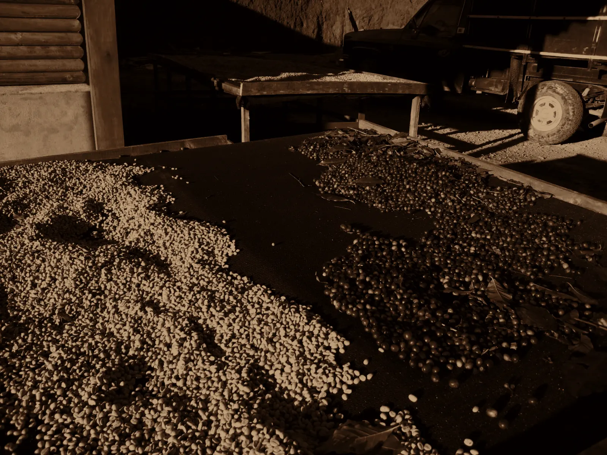
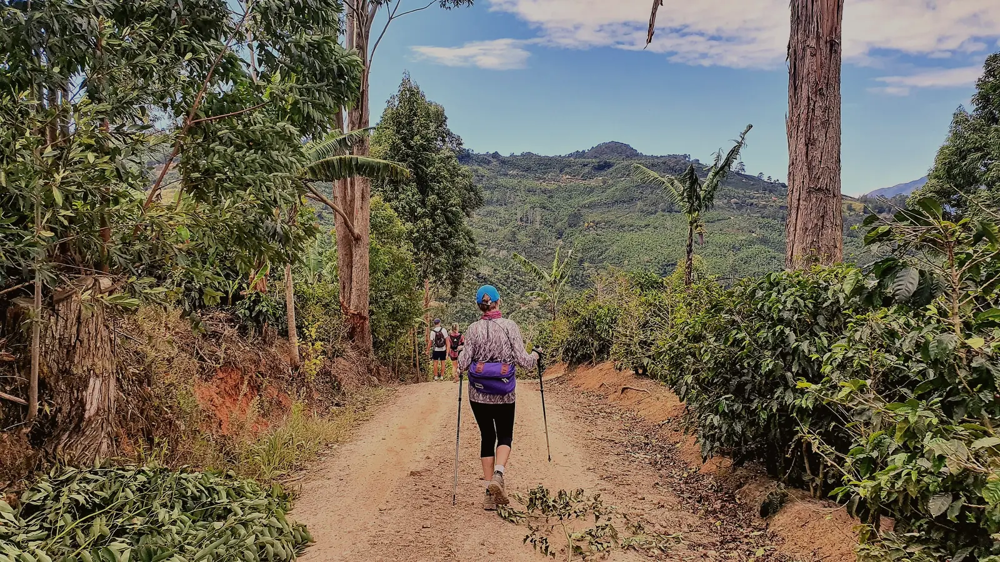
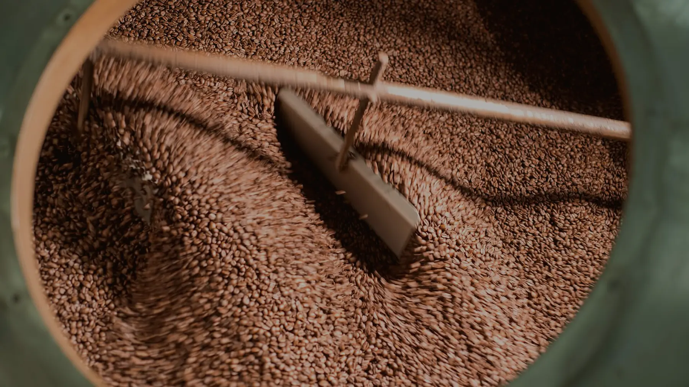
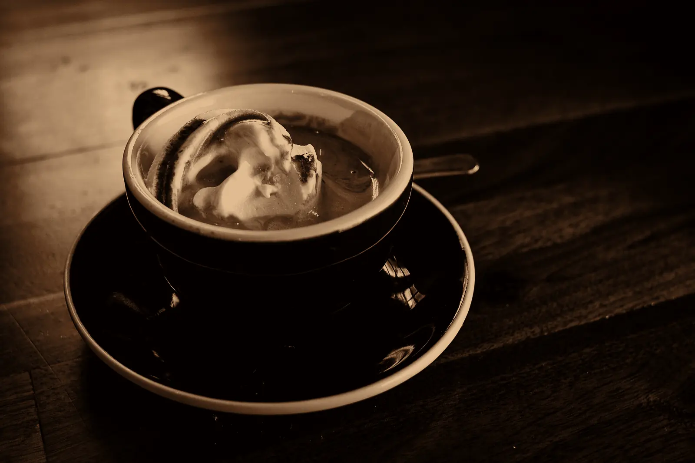

01
Cherry
Coffee starts as the seed of a fruit. Cherries ripen from green to deep red, and only the ripe ones are picked by hand. One tree gives roughly half a kilo to a kilo of roasted coffee a year.
Made for the coffee-obsessed
Coffee Flavors Across Continents
BY DWON
Where coffee grows, how it is roasted, and how to make it at home, with a machine or without one. Plus easy snacks to go with every cup.
The Journey

Coffee starts as the seed of a fruit. Cherries ripen from green to deep red, and only the ripe ones are picked by hand. One tree gives roughly half a kilo to a kilo of roasted coffee a year.

After picking, the seeds are separated from the fruit. Natural coffee dries whole in the sun for weeks and turns sweet and fruity. Washed coffee has the fruit removed in water and tastes clean and bright.

Green beans are roasted in a spinning drum, usually between 180 and 240 °C. They turn yellow, then brown, and around 196 °C you hear the first crack, like popcorn. Time and temperature decide light, medium or dark.

Fresh grinding, the right water temperature and a little patience. Hot water pulls the oils and sugars out of the grounds, and the first sip completes the ritual.
The Bean Belt
Roast Lab
Hot Coffee
Start with what is in your kitchen. No machine? You can still make a great cup.
Cold Coffee
Jar shakes, whipped foam and slow cold brew. Most of these need nothing more than a glass.
Snacks
Simple, vegetarian and egg-free. Pick the tawa and kadhai ones, or switch to oven and microwave.
Perfect Pairs
Six combinations that work. Open one to see both recipes together.
Scroll to build the moleculeC8H10N4O2
The Science
coffee [kaw-fee] (n.)
The first love of the morning, the one that opens your eyes without saying a word.
This is the caffeine molecule. It blocks adenosine receptors in your brain, which is why you feel less sleepy.